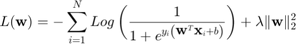

<!DOCTYPE html
  PUBLIC "-//W3C//DTD HTML 4.01 Transitional//EN">
<html><head>
      <meta http-equiv="Content-Type" content="text/html; charset=utf-8">
   <!--
This HTML was auto-generated from MATLAB code.
To make changes, update the MATLAB code and republish this document.
      --><title>2018 - CAB420 - Machine Learning</title><meta name="generator" content="MATLAB 9.1"><link rel="schema.DC" href="http://purl.org/dc/elements/1.1/"><meta name="DC.date" content="2018-04-09"><meta name="DC.source" content="report.m"><style type="text/css">
html,body,div,span,applet,object,iframe,h1,h2,h3,h4,h5,h6,p,blockquote,pre,a,abbr,acronym,address,big,cite,code,del,dfn,em,font,img,ins,kbd,q,s,samp,small,strike,strong,sub,sup,tt,var,b,u,i,center,dl,dt,dd,ol,ul,li,fieldset,form,label,legend,table,caption,tbody,tfoot,thead,tr,th,td{margin:0;padding:0;border:0;outline:0;font-size:100%;vertical-align:baseline;background:transparent}body{line-height:1}ol,ul{list-style:none}blockquote,q{quotes:none}blockquote:before,blockquote:after,q:before,q:after{content:'';content:none}:focus{outine:0}ins{text-decoration:none}del{text-decoration:line-through}table{border-collapse:collapse;border-spacing:0}

html { min-height:100%; margin-bottom:1px; }
html body { height:100%; margin:0px; font-family:Arial, Helvetica, sans-serif; font-size:10px; color:#000; line-height:140%; background:#fff none; overflow-y:scroll; }
html body td { vertical-align:top; text-align:left; }

h1 { padding:0px; margin:0px 0px 25px; font-family:Arial, Helvetica, sans-serif; font-size:1.5em; color:#d55000; line-height:100%; font-weight:normal; }
h2 { padding:0px; margin:0px 0px 8px; font-family:Arial, Helvetica, sans-serif; font-size:1.2em; color:#000; font-weight:bold; line-height:140%; border-bottom:1px solid #d6d4d4; display:block; }
h3 { padding:0px; margin:0px 0px 5px; font-family:Arial, Helvetica, sans-serif; font-size:1.1em; color:#000; font-weight:bold; line-height:140%; }

a { color:#005fce; text-decoration:none; }
a:hover { color:#005fce; text-decoration:underline; }
a:visited { color:#004aa0; text-decoration:none; }

p { padding:0px; margin:0px 0px 20px; }
img { padding:0px; margin:0px 0px 20px; border:none; }
p img, pre img, tt img, li img, h1 img, h2 img { margin-bottom:0px; } 

ul { padding:0px; margin:0px 0px 20px 23px; list-style:square; }
ul li { padding:0px; margin:0px 0px 7px 0px; }
ul li ul { padding:5px 0px 0px; margin:0px 0px 7px 23px; }
ul li ol li { list-style:decimal; }
ol { padding:0px; margin:0px 0px 20px 0px; list-style:decimal; }
ol li { padding:0px; margin:0px 0px 7px 23px; list-style-type:decimal; }
ol li ol { padding:5px 0px 0px; margin:0px 0px 7px 0px; }
ol li ol li { list-style-type:lower-alpha; }
ol li ul { padding-top:7px; }
ol li ul li { list-style:square; }

.content { font-size:1.2em; line-height:140%; padding: 20px; }

pre, code { font-size:12px; }
tt { font-size: 1.2em; }
pre { margin:0px 0px 20px; }
pre.codeinput { padding:10px; border:1px solid #d3d3d3; background:#f7f7f7; }
pre.codeoutput { padding:10px 11px; margin:0px 0px 20px; color:#4c4c4c; }
pre.error { color:red; }

@media print { pre.codeinput, pre.codeoutput { word-wrap:break-word; width:100%; } }

span.keyword { color:#0000FF }
span.comment { color:#228B22 }
span.string { color:#A020F0 }
span.untermstring { color:#B20000 }
span.syscmd { color:#B28C00 }

.footer { width:auto; padding:10px 0px; margin:25px 0px 0px; border-top:1px dotted #878787; font-size:0.8em; line-height:140%; font-style:italic; color:#878787; text-align:left; float:none; }
.footer p { margin:0px; }
.footer a { color:#878787; }
.footer a:hover { color:#878787; text-decoration:underline; }
.footer a:visited { color:#878787; }

table th { padding:7px 5px; text-align:left; vertical-align:middle; border: 1px solid #d6d4d4; font-weight:bold; }
table td { padding:7px 5px; text-align:left; vertical-align:top; border:1px solid #d6d4d4; }


  </style></head><body><div class="content"><h1>2018 - CAB420 - Machine Learning</h1><!--introduction--><p>Group Assignment 1 Alex Wilson and Christopher Ayling</p><!--/introduction--><h2>Contents</h2><div><ul><li><a href="#1">Theory</a></li><li><a href="#6">1. Feature, Classes and Linear Regression</a></li><li><a href="#13">2. kNN Regression</a></li><li><a href="#17">3. Hold-out and Cross-validation</a></li><li><a href="#21">4. Nearest Neighbor Classifiers</a></li><li><a href="#26">5. Perceptron and Logistic Regression</a></li></ul></div><h2 id="1">Theory</h2><p>Logistic regression is a method of fitting a probabilistic classifier that gives soft linear thresh-olds. It is common to use logistic regression with an objective function consisting of the negative log probability of the data plus an L2 regularizer:</p><p></p><p>(a) Find the partial derivatives </p><p>(b) Find the partial second derivatives </p><p>(c) From these results, show that  is a convex function.</p><h2 id="6">1. Feature, Classes and Linear Regression</h2><p>(a) Plot the training data in a scatter plot.</p><p>(b) Create a linear predictor (slope and intercept) using the above functions. Plot it on the same plot as the training data.</p><p>(c) Create another plot with the data and a fifth-degree polynomial</p><p>(d) Calculate the mean squared error associated with each of your learned models on the training data.</p><p>(e) Calculate the MSE for each model on the test data (in mcycleTest.txt).</p><p>(f) Don&#8217;t forget to label your plots; see help legend.</p><h2 id="13">2. kNN Regression</h2><pre class="codeinput">clc
clear
<span class="comment">% Load train data</span>
mTrain = load(<span class="string">'mcycleTrain.txt'</span>);
Ytrain = mTrain(:,1);
Xtrain = mTrain(:,2);
<span class="comment">% Load test data</span>
mTest = load(<span class="string">'mcycleTest.txt'</span>);
Ytest = mTest(:,1);
Xtest = mTest(:,2);
<span class="comment">% Plot Training Data</span>
figure(<span class="string">'name'</span>, <span class="string">'Motorcycle Data'</span>);
hold <span class="string">on</span>
plot(Xtrain, Ytrain, <span class="string">'bo'</span>);
title(<span class="string">'Motorcycle Training Data'</span>)
legend(<span class="string">'Training data'</span>);
hold <span class="string">off</span>
</pre> <p>(a) Using the knnRegress class, implement (add code to) the predict function to make it functional.</p><pre class="language-matlab">
    <span class="comment">% Test function: predict on Xtest</span>
    <span class="keyword">function</span> Yte = predict(obj,Xte)
      [Ntr,Mtr] = size(obj.Xtrain);          <span class="comment">% get size of training, test data</span>
      [Nte,Mte] = size(Xte);
      classes = unique(obj.Ytrain);          <span class="comment">% figure out how many classes &amp; their labels</span>
      Yte = repmat(obj.Ytrain(1), [Nte,1]);  <span class="comment">% make Ytest the same data type as Ytrain</span>
      K = min(obj.K, Ntr);                  <span class="comment">% can't have more than Ntrain neighbors</span>
      <span class="keyword">for</span> i=1:Nte                          <span class="comment">% For each test example:</span>
        dist = sum( bsxfun( @minus, obj.Xtrain, Xte(i,:) ).^2 , 2);  <span class="comment">% compute sum of squared differences</span>
        <span class="comment">%dist = sum( (obj.Xtrain - repmat(Xte(i,:),[Ntr,1]) ).^2 , 2);  % compute sum of squared differences</span>
        [tmp,idx] = sort(dist);              <span class="comment">% find nearest neighbors over Xtrain (dimension 2)</span>
                                            <span class="comment">% idx(1) is the index of the nearest point, etc.; see help sort</span>
        
<span class="comment">%         error('You should write prediction code here');</span>
        kclosest_vals = [];
        <span class="keyword">for</span> j=1:K
            kclosest_vals = [kclosest_vals, obj.Ytrain(idx(j))];
        <span class="keyword">end</span>
        Yte(i) = sum(kclosest_vals)/K;
<span class="comment">%         Yte(i)=obj.Ytrain(idx(1));       % predict ith test example's value from nearest neighbors</span>
      <span class="keyword">end</span>;
    <span class="keyword">end</span>

</pre><pre class="codeinput">learner = knnRegress(1,Xtrain, Ytrain);
Yhat = predict(learner, Xtest);
figure(<span class="string">'name'</span>, <span class="string">'Knn Testing'</span>);
hold <span class="string">on</span>
plot(Xtest, Ytest, <span class="string">'go'</span>);
plot(Xtest, Yhat, <span class="string">'ro'</span>);
legend(<span class="string">'Y test'</span>, <span class="string">'Y hat'</span>);
title(<span class="string">'1NN on Motorcycle Testing Data'</span>)
hold <span class="string">off</span>
</pre> <p>(b) Using the same technique as in Problem 1a, plot the predicted function for several values of . How does the choice of  relate to the &#8220;complexity&#8221; of the regression function?</p><pre class="codeinput"><span class="comment">%</span>
<span class="comment">% The higher the value of K, the lower the complexity.</span>
<span class="comment">%</span>
ks = [1, 2, 3, 4, 5, 10, 50];
Xs = min(Xtrain):0.001:max(Xtrain); Xs = Xs';
figure(<span class="string">'name'</span>, <span class="string">'testing values of k'</span>)
hold <span class="string">on</span>
learner = knnRegress(1,Xtrain, Ytrain);
<span class="keyword">for</span> i=1:length(ks)
    learner = knnRegress(ks(i),Xtrain, Ytrain);
    stairs(Xs, predict(learner, Xs), <span class="string">'-'</span>, <span class="string">'linewidth'</span>, 3);
<span class="keyword">end</span>
title(<span class="string">'kNN Regression Function for Motorcycle Data'</span>)
legend(cellstr(int2str(ks')))
hold <span class="string">off</span>
</pre> <p>(c) What kind of functions can be output by a nearest neighbor regression function? Briefly justify your conclusion.</p><p>As a KNN regression produces a piecewise linear function, given the right data, any function can be approximated.</p><h2 id="17">3. Hold-out and Cross-validation</h2><p>(a) Similarly to Problem 1 and 2, compute the MSE of the test data on a model trained on only the first 20 training data examples for . Plot the MSE versus  on a log-log scale (see help loglog).</p><p>(b) Repeat, but use all the training data. What happened? Contrast with your results from problem 1 (hint: which direction is &#8220;complexity&#8221; in this picture?).</p><p>(c) Using only the training data, estimate the curve using 4-fold cross-validation. Split the training data into two parts, indices 1:20 and 21:80; use the larger of the two as training data and the smaller as testing data, then repeat three more times with different sets of 20 and average the MSE. Add this curve to your plot. Why might we need to use this technique?</p><h2 id="21">4. Nearest Neighbor Classifiers</h2><pre class="codeinput">clc
clear
<span class="comment">% Load Iris Dataset</span>
iris = load(<span class="string">'iris.txt'</span>);
pi = randperm(size(iris, 1));
Y = iris(pi, 5);
X = iris(pi, 1:2);
m = length(Y);
</pre><p>(a) Plot the data by their feature values, using the class value to select the color.</p><pre class="codeinput">figure(<span class="string">'name'</span>, <span class="string">'Iris flower data set'</span>)
title(<span class="string">'Iris flower data set'</span>)
xlabel(<span class="string">'Sepal Length'</span>)
ylabel(<span class="string">'Sepal Width'</span>)
hold <span class="string">on</span>
plot(X(Y==0,1), X(Y==0,2), <span class="string">'ko'</span>, <span class="string">'markersize'</span>,7, <span class="string">'markerfacecolor'</span>, <span class="string">'red'</span>);
plot(X(Y==1,1), X(Y==1,2), <span class="string">'ko'</span>, <span class="string">'markersize'</span>,7, <span class="string">'markerfacecolor'</span>, <span class="string">'green'</span>);
plot(X(Y==2,1), X(Y==2,2), <span class="string">'ko'</span>, <span class="string">'markersize'</span>,7, <span class="string">'markerfacecolor'</span>, <span class="string">'blue'</span>);
hold <span class="string">off</span>
</pre> <p>(b) Use the provided knnClassify class to learn a 1-nearest-neighbor predictor.</p><pre class="codeinput">nnlearner = knnClassify(1, X, Y);
class2DPlot(nnlearner, X, Y);
</pre> <p>(c) Do the same thing for several values of k (say, [1, 3, 10, 30]) and comment on their appearance.</p><pre class="codeinput">ks = [1, 3, 10, 30];
<span class="keyword">for</span> i=1:length(ks)
    learner = knnClassify(ks(i), X, Y);
    class2DPlot(learner, X, Y);
<span class="keyword">end</span>
</pre>    <p>(d) Now split the data into an 80/20 training/validation split. For , learn a model on the 80% and calculate its performance (# of data classified incorrectly) on the validation data. What value of k appears to generalize best given your training data? Comment on the performance at the two endpoints, in terms of over- or under-fitting.</p><pre class="codeinput">split = 0.8; train_size = floor(split*m);

Xtrain = X(1:train_size,:);
Ytrain = Y(1:train_size,:);
Xtest = X(train_size+1:end,:);
Ytest = Y(train_size+1:end,:);

ks = [1, 2, 5, 10, 50, 100, 200];
errors = [];
<span class="keyword">for</span> i=1:length(ks)
    learner = knnClassify(ks(i), Xtrain, Ytrain);
    Yhat = predict(learner, Xtest);
    errors = [errors, sum(Yhat == Ytest)];
<span class="keyword">end</span>
figure(<span class="string">'name'</span>, <span class="string">'Errors vs K'</span>);
hold <span class="string">on</span>
title(<span class="string">'Errors vs K Using Iris Dataset'</span>);
xlabel(<span class="string">'K'</span>);
ylabel(<span class="string">'Errors'</span>);
plot(errors);
xticklabels(ks)
hold <span class="string">off</span>
</pre> <h2 id="26">5. Perceptron and Logistic Regression</h2><p>(a) Show the two classes in a scatter plot and verify that one is linearly separable while the other is not</p><p>(b) Write (fill in) the function @logisticClassify2/plot2DLinear.m so that it plots the two classes of data in dierent colors, along with the decision boundary (a line). Include the listing of your code in your report. To demo your function plot the decision boundary corresponding to the classifier </p><p>(c) Complete the predict.m function to make predictions for your linear classifier.</p><p>(d)</p><p></p><p></p><p>Derive the gradient of the regularized negative log likelihood  for logistic regression, and give it in your report</p><p>(e) Complete your train.m function to perform stochastic gradient descent on the logistic loss function.</p><p>(1) computing the surrogate loss function at each iteratio</p><p>(2) computing the prediction and gradient associated with each data poin</p><p>(3) a gradient step on the parameters </p><p>(4) a stopping criterion.</p><p>(f) Run your logistic regression classifier on both data sets (A and B); for this problem, use no regularization . Describe your parameter choices (stepsize, etc.) and show a plot of both the convergence of the surrogate loss and error rate, and a plot of the final converged classifier with the data (using e.g. plotClassify2D). In your report, please also include the functions that you wrote (at minimum, train.m,</p><pre class="codeinput"><span class="comment">%but possibly a few small helper functions as well)</span>
</pre><pre class="codeinput">close <span class="string">all</span>
</pre><p class="footer"><br><a href="http://www.mathworks.com/products/matlab/">Published with MATLAB&reg; R2016b</a><br></p></div><!--
##### SOURCE BEGIN #####
%% 2018 - CAB420 - Machine Learning
% Group Assignment 1
% Alex Wilson and Christopher Ayling

%% Theory 
% Logistic regression is a method of fitting a probabilistic classifier
% that gives soft linear thresh-olds. It is common to use logistic
% regression with an objective function consisting of the negative log
% probability of the data plus an L2 regularizer:
%%
% 
% $$L(\textbf{w}) = -\displaystyle\sum_{i=1}^{N} Log \left( \frac{1}{1+e^{y_i \left( \textbf{w}^T \textbf{x}_i + b \right) }} \right) + \lambda \|\textbf{w}\|_2^2 $$
% 


%%
% (a) Find the partial derivatives $\frac{\partial L}{\partial w_j}$
%

%%
% (b) Find the partial second derivatives $\frac{\partial L^2}{\partial w_j \partial w_k}$

%%
% (c) From these results, show that $L(w)$ is a convex function.

%% 1. Feature, Classes and Linear Regression

%%
% (a) Plot the training data in a scatter plot.

%%
% (b) Create a linear predictor (slope and intercept) using the above
% functions. Plot it on the same plot as the training data.

%%
% (c) Create another plot with the data and a fifth-degree polynomial

%%
% (d) Calculate the mean squared error associated with each of your learned
% models on the training data.

%%
% (e) Calculate the MSE for each model on the test data (in mcycleTest.txt).

%%
% (f) Don’t forget to label your plots; see help legend.

%% 2. kNN Regression

clc
clear
% Load train data
mTrain = load('mcycleTrain.txt');
Ytrain = mTrain(:,1);
Xtrain = mTrain(:,2);
% Load test data
mTest = load('mcycleTest.txt');
Ytest = mTest(:,1);
Xtest = mTest(:,2);
% Plot Training Data
figure('name', 'Motorcycle Data');
hold on
plot(Xtrain, Ytrain, 'bo');
title('Motorcycle Training Data')
legend('Training data');
hold off

%%
% (a) Using the knnRegress class, implement (add code to) the predict
% function to make it functional.
%
% <include>@knnRegress/predict.m</include>
learner = knnRegress(1,Xtrain, Ytrain);
Yhat = predict(learner, Xtest);
figure('name', 'Knn Testing');
hold on
plot(Xtest, Ytest, 'go');
plot(Xtest, Yhat, 'ro');
legend('Y test', 'Y hat');
title('1NN on Motorcycle Testing Data')
hold off

%%
% (b) Using the same technique as in Problem 1a, plot the predicted
% function for several values of $k: 1, 2, 3, 5, 10, 50$. How does the
% choice of $k$ relate to the “complexity” of the regression function?

%
% The higher the value of K, the lower the complexity.
%
ks = [1, 2, 3, 4, 5, 10, 50];
Xs = min(Xtrain):0.001:max(Xtrain); Xs = Xs';
figure('name', 'testing values of k')
hold on
learner = knnRegress(1,Xtrain, Ytrain);
for i=1:length(ks)
    learner = knnRegress(ks(i),Xtrain, Ytrain);
    stairs(Xs, predict(learner, Xs), '-', 'linewidth', 3);
end
title('kNN Regression Function for Motorcycle Data')
legend(cellstr(int2str(ks')))
hold off

%%
% (c) What kind of functions can be output by a nearest neighbor regression
% function? Briefly justify your conclusion.
%
% As a KNN regression produces a piecewise linear function, given the right data, any function
% can be approximated.
%

%% 3. Hold-out and Cross-validation

%%
% (a) Similarly to Problem 1 and 2, compute the MSE of the test data on a
% model trained on only the first 20 training data examples for
% $k = 1, 2, 3, . . . , 100$. Plot the MSE versus $k$ on a log-log scale
% (see help loglog).

%%
% (b) Repeat, but use all the training data. What happened? Contrast with
% your results from problem 1 (hint: which direction is “complexity” in this picture?).


%%
% (c) Using only the training data, estimate the curve using 4-fold
% cross-validation. Split the training data into two parts, indices 1:20
% and 21:80; use the larger of the two as training data and the smaller as
% testing data, then repeat three more times with different sets of 20 and
% average the MSE. Add this curve to your plot. Why might we need to use
% this technique?

%% 4. Nearest Neighbor Classifiers
clc
clear
% Load Iris Dataset
iris = load('iris.txt');
pi = randperm(size(iris, 1));
Y = iris(pi, 5);
X = iris(pi, 1:2);
m = length(Y);

%%
% (a) Plot the data by their feature values, using the class value to
% select the color.
figure('name', 'Iris flower data set')
title('Iris flower data set')
xlabel('Sepal Length')
ylabel('Sepal Width')
hold on
plot(X(Y==0,1), X(Y==0,2), 'ko', 'markersize',7, 'markerfacecolor', 'red');
plot(X(Y==1,1), X(Y==1,2), 'ko', 'markersize',7, 'markerfacecolor', 'green');
plot(X(Y==2,1), X(Y==2,2), 'ko', 'markersize',7, 'markerfacecolor', 'blue');
hold off

%%
% (b) Use the provided knnClassify class to learn a 1-nearest-neighbor
% predictor.
nnlearner = knnClassify(1, X, Y);
class2DPlot(nnlearner, X, Y);

%%
% (c) Do the same thing for several values of k (say, [1, 3, 10, 30]) and
% comment on their appearance.
ks = [1, 3, 10, 30];
for i=1:length(ks)
    learner = knnClassify(ks(i), X, Y);
    class2DPlot(learner, X, Y);
end

%%
% (d) Now split the data into an 80/20 training/validation split. For
% $k = [1, 2, 5, 10, 50, 100, 200]$, learn a model on the 80% and calculate
% its performance (# of data classified incorrectly) on the validation
% data. What value of k appears to generalize best given your training
% data? Comment on the performance at the two endpoints, in terms of over-
% or under-fitting.

split = 0.8; train_size = floor(split*m);

Xtrain = X(1:train_size,:);
Ytrain = Y(1:train_size,:);
Xtest = X(train_size+1:end,:);
Ytest = Y(train_size+1:end,:);

ks = [1, 2, 5, 10, 50, 100, 200];
errors = [];
for i=1:length(ks)
    learner = knnClassify(ks(i), Xtrain, Ytrain);
    Yhat = predict(learner, Xtest);
    errors = [errors, sum(Yhat == Ytest)];
end
figure('name', 'Errors vs K');
hold on
title('Errors vs K Using Iris Dataset');
xlabel('K');
ylabel('Errors');
plot(errors);
xticklabels(ks)
hold off

%% 5. Perceptron and Logistic Regression

%%
% (a) Show the two classes in a scatter plot and verify that one is
% linearly separable while the other is not

%%
% (b) Write (fill in) the function @logisticClassify2/plot2DLinear.m so that
% it plots the two classes of data in dierent colors, along with the
% decision boundary (a line). Include the listing of your code in your
% report. To demo your function plot the decision boundary corresponding
% to the classifier $$ sign(.5 + 1x_1 - .25x_2) $$

%%
% (c) Complete the predict.m function to make predictions for your linear classifier.

%%
% (d)
% 
% $$ \sigma\left( 1 + exp(-z) \right)^{-1} $$
%
% $$ J_j(\theta) = -y^{j} \log \sigma \left( \theta x^{(j)T} \right) -(1-y^{(j)}) \log \left( 1-\sigma \left( \theta x^{(j)T} \right) \right) + \alpha \displaystyle\sum_i \theta_i^2 $$
% 
% Derive the gradient of the regularized negative log likelihood $J_j$ for
% logistic regression, and give it in your report

%%
% (e) Complete your train.m function to perform stochastic gradient descent
% on the logistic loss function. 

%%
% (1) computing the surrogate loss function at each iteratio
%%
% (2) computing the prediction and gradient associated with each data poin
%%
% (3) a gradient step on the parameters $\theta$
%%
% (4) a stopping criterion.

%%
% (f) Run your logistic regression classifier on both data sets (A and B);
% for this problem, use no regularization $(\alpha = 0)$. Describe your parameter
% choices (stepsize, etc.) and show a plot of both the convergence of the
% surrogate loss and error rate, and a plot of the final converged
% classifier with the data (using e.g. plotClassify2D). In your report,
% please also include the functions that you wrote (at minimum, train.m,
%but possibly a few small helper functions as well)

%%
close all


##### SOURCE END #####
--></body></html>